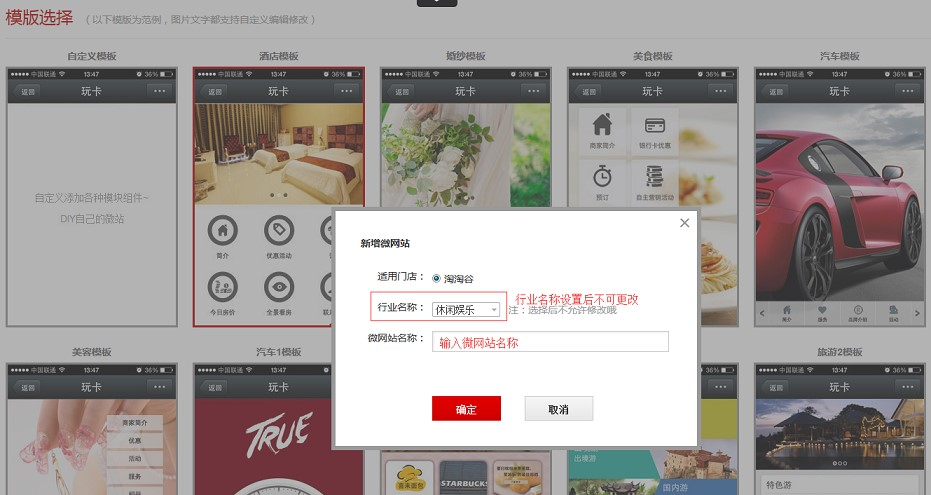
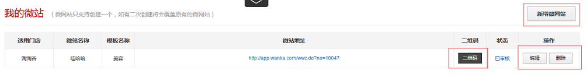
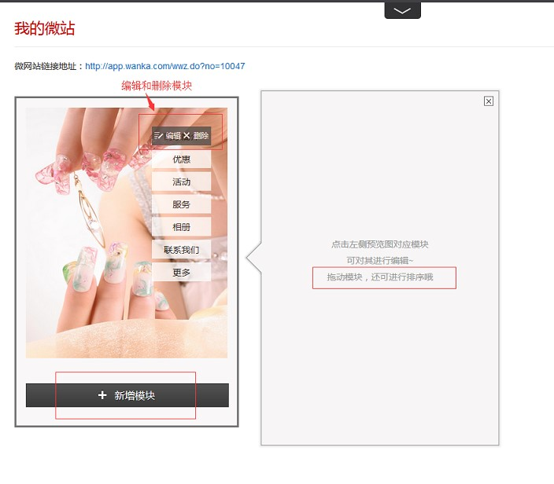
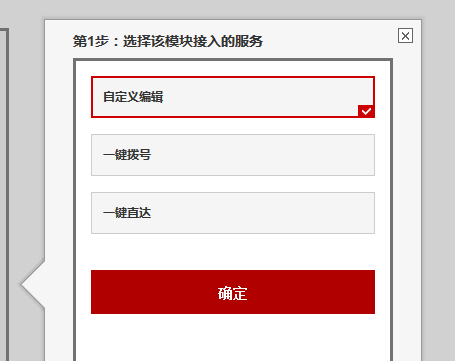
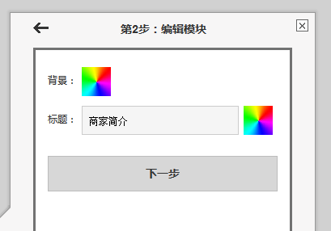
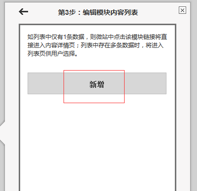
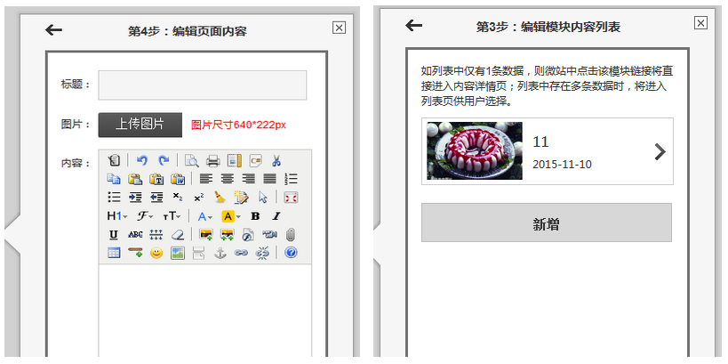
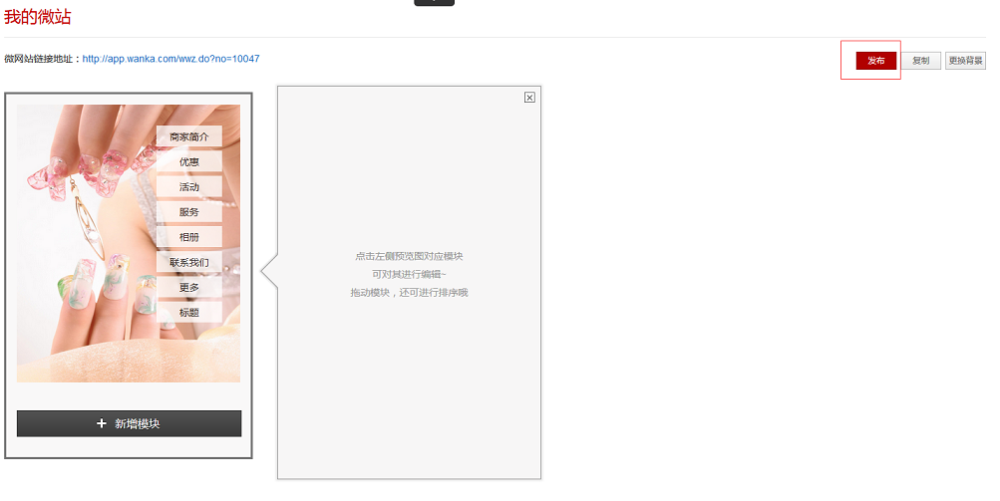
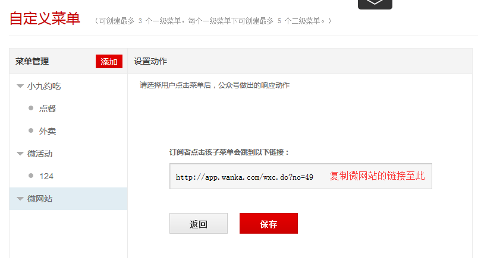

微网站需在商户后台PC端进行设置
1、新增微网站（注：微网站只支持创建一个，如有二次创建将会覆盖原有的微网站）
打开微网站应用后进入“我的微站”页面，点击页面右上角片【新增微网站】按钮，进入”模板选择“页面，用户可根据需求选择相对应的模板，也可自定义自己的DIY模板，点击模板后按照提示要求选择适用门店、行业名称、微网站名称（名称、模版不能更改，一旦更改，相当于新建一个微网站），完成后点击确定即跳转至“我的微站”页面，生成该微网站链接。详见如下图所示：


2、编辑微网站（注：为微网站添加内容）
成功生成微网站链接后，在“我的微站”页面，点击【编辑】按钮，进入”微网站编辑“页面，编辑模块内容。鼠标移入对应模块后，用户可选择编辑或者删除模块。拖动模块，可对其进行排序，如需新增，点击底端的"新增模块"即可。用户可点击页面右上角的[更换背景]按钮切换背景。如下图所示：

编辑模块——第一步
选择对应模块点击【编辑】按钮后，需要选择该模块接入的服务，包括自定义编辑、一键拨号、一键直达，如下图所示：
自定义编辑：用户可自定义编辑该模块的背景、模块标题，可新增多条数据；如果用户有多条数据或者信息要分条展示在一个模块，建议使用自定义编辑服务。
一键拨号：用户可在此模块编辑该模块的背景、模块标题，以及输入联系电话；如用户有设置电话预约或者联系我们模块的需要，建议编辑时使用此服务。
一键直达：用户可在此模块编辑该模块的背景、模块标题，以及输入链接；用户点击此模块时直接跳转至该链接。

编辑模块——第二步（自定义编辑）
选择自定义编辑服务后，用户根据自己需求编辑该模块的背景、模块标题，完成后点击下一步，如下图所示：

编辑模块——第三步（自定义编辑）
编辑完成该模块的背景、模块标题后，进入编辑模块内容列表页面（注：如列表中仅有1条数据，则微站中点击该模块链接将直接进入内容详情页；列表中存在多条数据时，将进入列表页供用户选择）。点击"新增"，进入内容编辑页面。如下图所示：

编辑模块——第四步（自定义编辑）
进入内容编辑页面后，设置好内容标题，上传图片注意图片尺寸为640*222px，输入正文内容，完成后点击确定即可。此信息会展示在“自定义编辑-第三步”的内容列表里，如下图所示：

3、发布微网站
完成各模块设置后，点击"发布"即可。如需使用该微站，复制微站的链接地址，并将该链接放到"微信接入-自定义菜单-跳转到网页"中，点击保存并发布即可。如下图所示：

